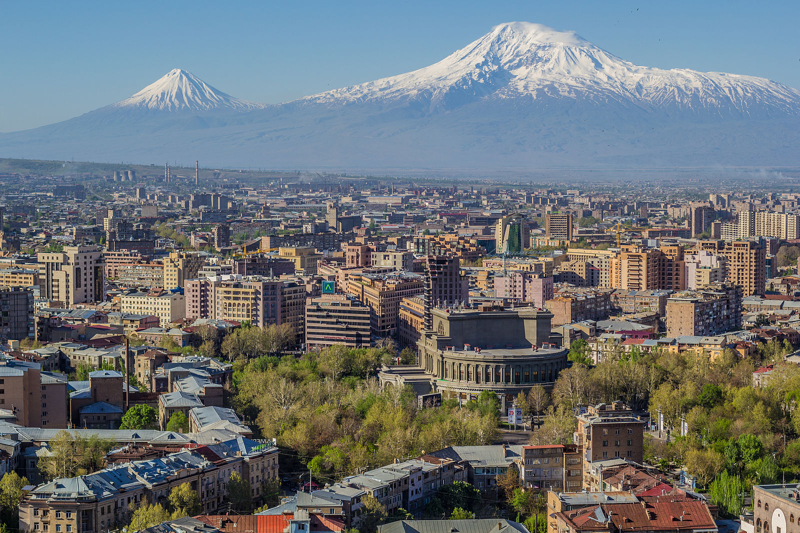

The 15th International Symposium and COST Workshop “Optics & its applications” (OPTICS-15) organized by
- TETRA COST Action
- Yerevan State University
- Institute of Applied Problems of Physics
- A.I. Alikhanyan National Science Laboratory
- Institute for Physical Research
- IPR Armenia Optica Student Chapter
- Armenian TC of the ICO
The symposium highlights:
- Invited plenary talks and sectional presentations
- Poster presentations
- Student presentations (prize for best talk)
- Presentations of scientific organizations and societies
- Lab tours
- Social events
The goal of this symposium is to bring together experienced and young scientists from various countries working on optics and to provide a perfect setting for their discussions of the most recent developments in that area.